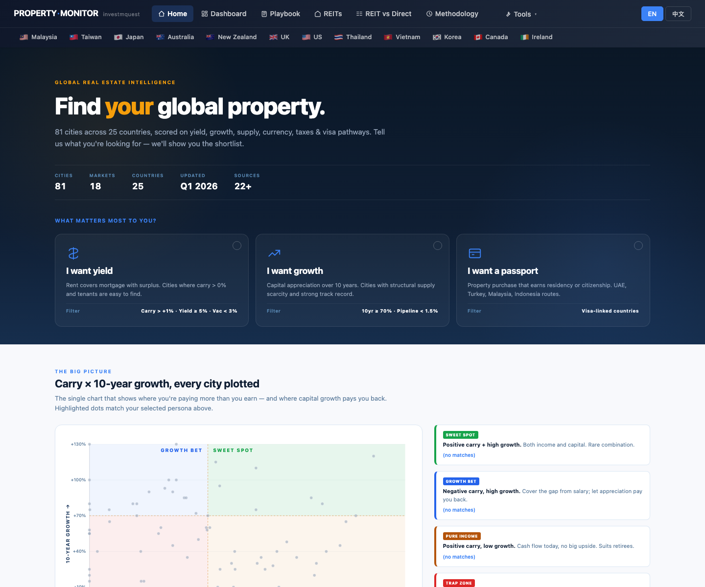
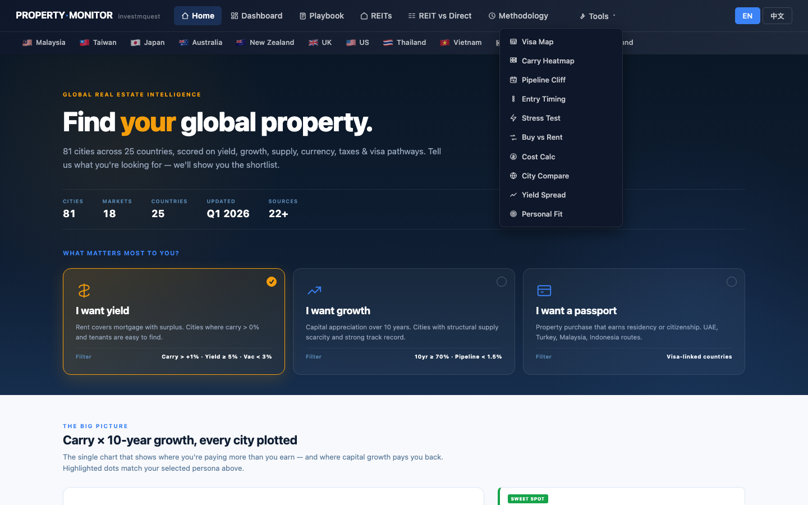
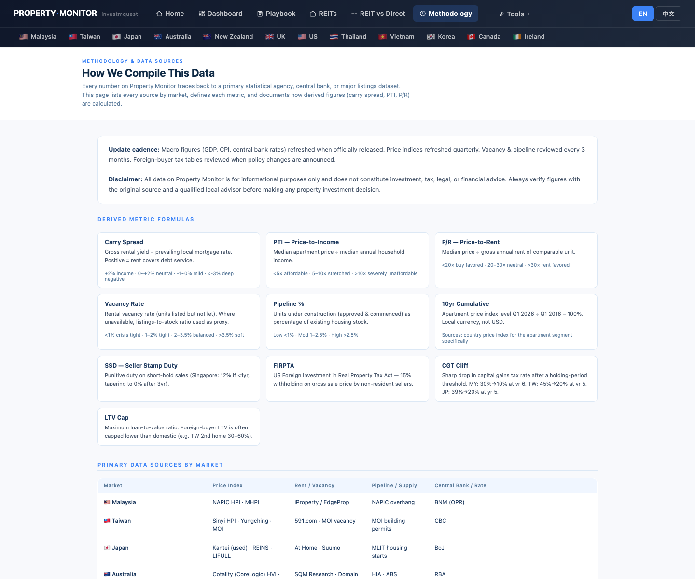
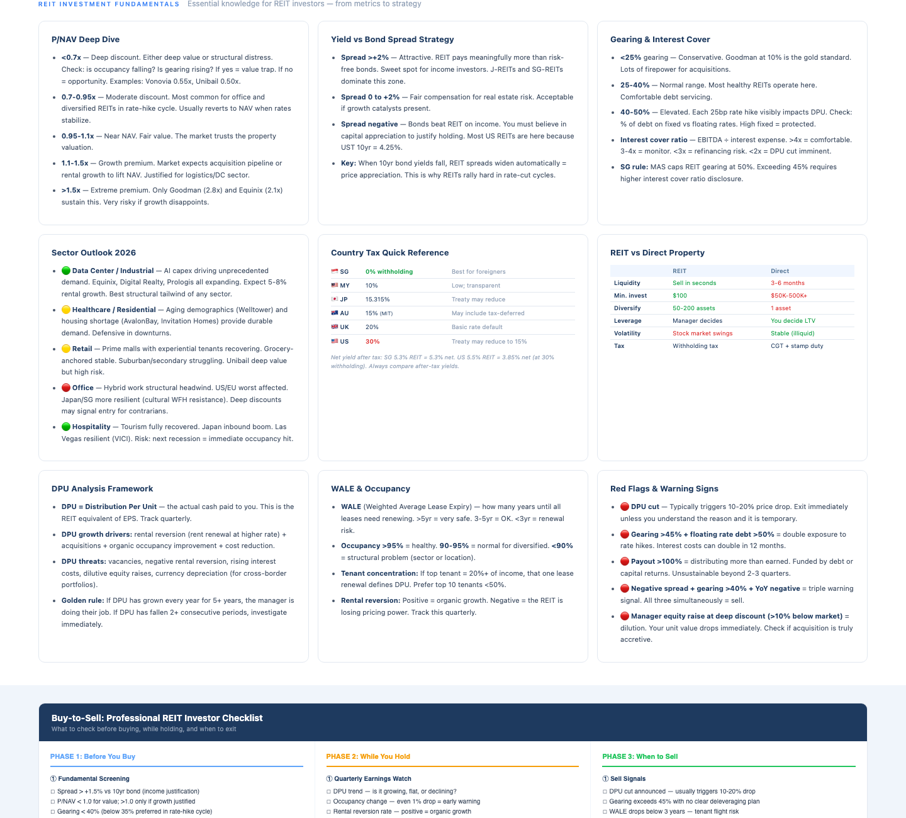
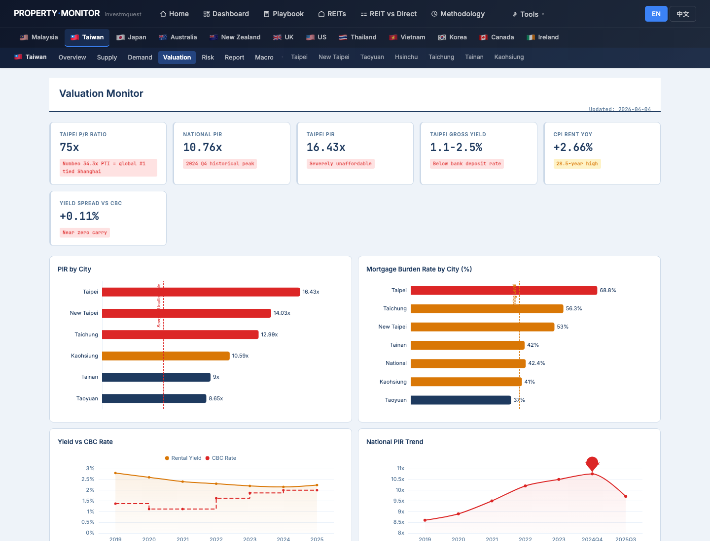
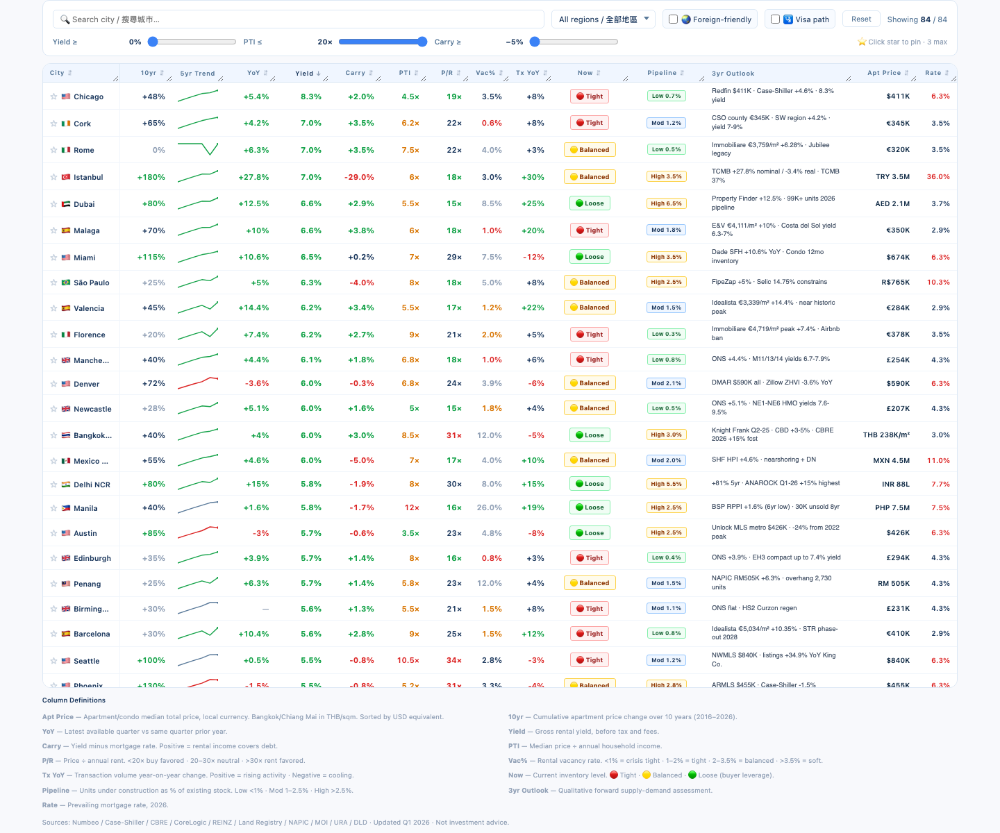
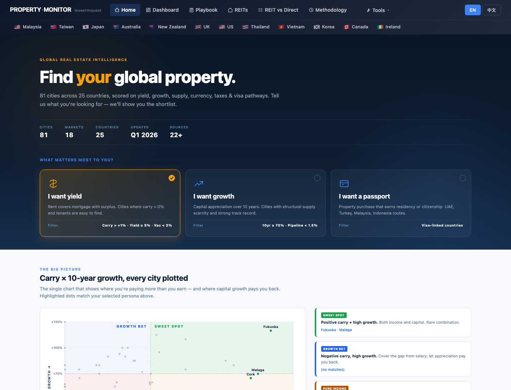
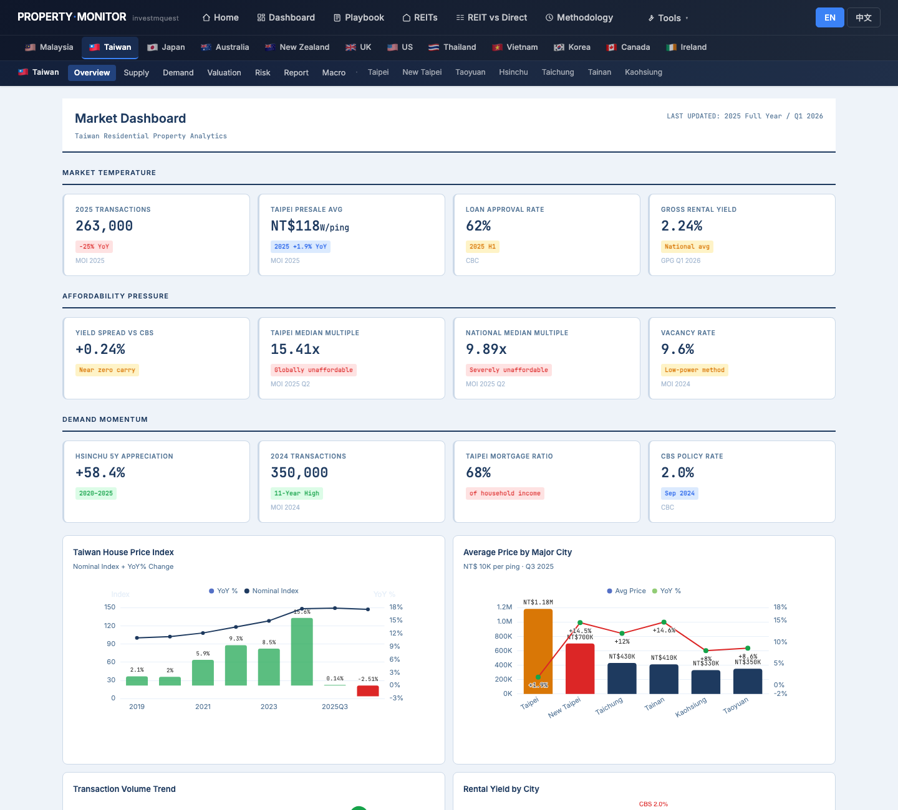
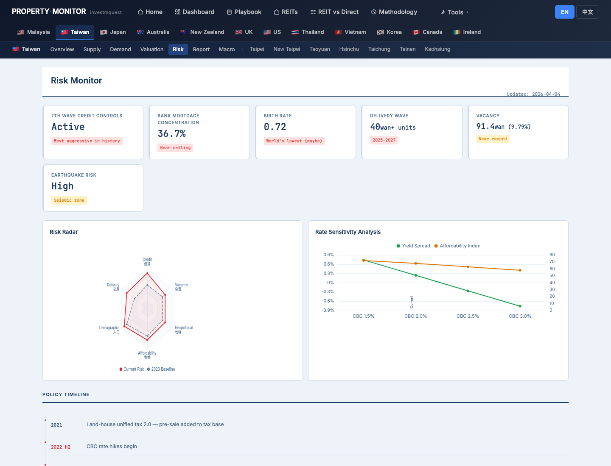
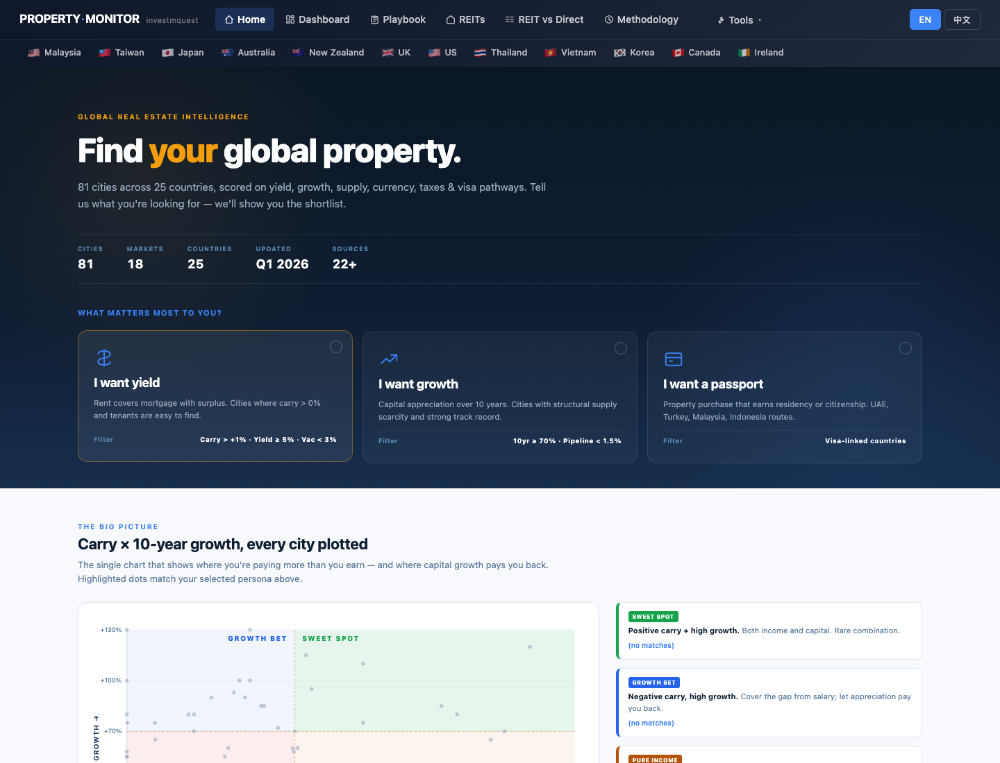

Mr. Chou (周先生, 42, mid-level government employee in Kaohsiung) recently lost both parents. Their estate left him NT$ 30M in liquid assets. He has never owned property, never invested in REITs, and has never visited a property data website before. A colleague forwarded him this site. He is paralyzed by choice and afraid of making a mistake with money he didn't earn himself. This walkthrough doesn't teach him what to buy. It teaches him how to use this site to stop being paralyzed — first by understanding the interface, then by understanding the concepts, and finally by building a personal learning plan that stretches over months, not minutes. He does not make a purchase decision at the end. 周先生，42 歲，高雄市公務員，父母近期相繼離世，留下 NT$ 3,000 萬現金遺產。他從未擁有過房產、從未購買 REIT，甚至從未瀏覽過任何房地產資訊網站。一位同事把這個網站連結傳給他。面對這麼大一筆「自己沒賺到」的錢，他不知道該如何是好，動彈不得。這份導覽不告訴他買什麼。它告訴他如何用這個網站打破那種癱瘓感 — 先認識介面，再理解概念，最後建立一個橫跨數個月的個人學習計畫。他在結尾不做任何購買決定。
- Where do I even start? What does this site actually do?我從哪裡開始？這個網站到底在做什麼？
- Can I trust the numbers — where do they come from, who compiled them?這些數字我可以相信嗎 — 從哪裡來的？誰整理的？
- What's a REIT? What does "yield" mean? What is "carry"? Where are these concepts explained?什麼是 REIT？「收益率」是什麼意思？「利差」又是什麼？哪裡有解釋這些概念？
- How do I see the global picture before locking onto one market?怎麼先看全球大圖，再鎖定特定市場？
- How do I navigate between countries and switch tools?怎麼在各國之間切換？工具列在哪裡？
- Should I buy something today — or is there a smarter sequence of steps?我今天就應該買東西嗎 — 還是有更聰明的步驟順序？
- How do I switch the site to 中文? Can I download anything to share with my financial planner?怎麼切換成中文？有什麼可以下載、拿去給理財規劃師看的嗎？
Mr. Chou's orientation tour — 12 stops across 4 phases周先生的入門旅程 — 4 個階段，12 個停靠點
Each stop is a real page on the site. The journey is deliberately slow and literacy-first: Phase A orients him to the site's structure; Phase B explains the concepts the site uses; Phase C gives him a first unstructured browsing session; Phase D ends with a learning plan. He does not pick a city or asset to buy. 每個停靠點都是站上的一頁實際畫面。旅程故意放慢、以識讀能力為優先：A 階段讓他認識網站架構；B 階段解釋站上使用的概念；C 階段給他第一次無壓力的瀏覽體驗；D 階段以學習計畫作結。他不選定任何城市或資產買入。
Site orientation — where things live認識網站結構 — 東西在哪裡
The home page tour — what this site is, who it's for, and what the 81-city scatter means首頁完整導覽 — 這個網站是什麼、給誰用的、81 城市散點圖代表什麼
What he sees: the hero section explains "81 cities monitored, 6 real estate markets." Three persona cards — each represents an investor goal. The scatter chart plots every monitored city as a dot: the X axis is carry (yield minus mortgage cost), the Y axis is 10-year price appreciation. Dots in the upper-right are the dream: positive carry AND strong capital growth. Dots in the lower-left are traps. Below the chart, the world map shows the same data geographically, with dots color-coded by performance. A Top 5 strip shows the leading cities for whichever persona is active. A demo strip shows the six other walkthroughs — Mr. Chou sees he is not alone; others have started from zero too. 螢幕出現什麼：Hero 區說明「監測 81 城市、6 個房地產市場」。三張 persona 卡各代表一種投資目標。散點圖把每個受監測城市畫成一個點：X 軸是利差（收益率減房貸成本），Y 軸是 10 年房價漲幅。右上角的點是夢幻組合：正利差 + 強勁增值。左下角的點是陷阱。圖表下方是世界地圖，用顏色標示同一份數據的地理分布。Top 5 條顯示目前啟用 persona 下的領先城市。導覽示範條展示另外六份導覽——周先生看到他並不孤單，其他人也從零開始過。

Navbar anatomy — the Tools dropdown, market flags, language toggle, rate badge導覽列解剖 — Tools 下拉、市場旗幟、語言切換、利率標籤
What he sees in the navbar (left to right):
• Logo "Property Monitor" — clicking it always returns to the home page of whichever market you're in.
• Market flag dropdowns (MY 🇲🇾 · TW 🇹🇼 · AU 🇦🇺 · JP 🇯🇵 · NZ 🇳🇿 · UK 🇬🇧) — each flag is a dropdown; hovering reveals links to Supply / Demand / Valuation / Risk / Report pages for that market.
• Tools dropdown — contains: Dashboard (84-city comparison table), Carry Heatmap, Pipeline Cliff, REITs, REIT vs Direct, Playbook, Methodology. These are the cross-market analytical tools.
• Language toggle (EN / 中文) — switches every word on every page. The preference is saved in your browser.
• Rate badge (CBC: 2.00% for Taiwan) — the current central bank policy rate. Relevant for carry calculations.
導覽列的東西（由左至右）：
• Logo「Property Monitor」 — 點它永遠回到你所在市場的首頁。
• 市場旗幟下拉（MY 🇲🇾 · TW 🇹🇼 · AU 🇦🇺 · JP 🇯🇵 · NZ 🇳🇿 · UK 🇬🇧）— 每個旗幟都是下拉選單；移上去會看到該市場的「供給 / 需求 / 估值 / 風險 / 報告」頁連結。
• Tools 下拉 — 包含：Dashboard（84 城市比較表）、Carry Heatmap、Pipeline Cliff、REITs、REIT vs Direct、Playbook、Methodology。這些是跨市場分析工具。
• 語言切換（EN / 中文）— 切換每個頁面上的所有文字。偏好設定存在你的瀏覽器裡。
• 利率標籤（台灣：CBC: 2.00%）— 目前央行政策利率。與利差計算相關。

Methodology — where every number comes from, and why you can trust itMethodology — 每個數字從哪來的，以及為何值得信任
What he sees (4 sections):
• DERIVED METRIC FORMULAS — exact formulas for Carry, PTI, P/R Ratio, Pipeline%, and Vacancy. No black boxes.
• PRIMARY DATA SOURCES BY MARKET — a ~20-row table listing the exact government agency, index, or research firm behind each data point for each country (e.g., Taiwan MOI for transactions, Global Property Guide for yields, BIS for price indices).
• TAX, STAMP DUTY & FOREIGN-BUYER POLICY SOURCES — every tax rate has a cited source and a date.
• VERSION & UPDATE LOG — when data was last updated.
他看到的（4 個區塊）：
• 衍生指標計算公式 — Carry、PTI、P/R 比、Pipeline%、空置率的精確公式。沒有黑盒子。
• 各市場一手資料來源 — 約 20 列的表格，列出每個國家每個數據點背後的確切政府機關、指數或研究機構（例如：台灣交易量來自內政部、收益率來自 Global Property Guide、房價指數來自 BIS）。
• 稅務、印花稅與外國買家政策來源 — 每個稅率都有引用來源和日期。
• 版本與更新記錄 — 數據最後更新時間。

Concept literacy — what the words mean概念識讀 — 那些詞彙是什麼意思
REITs page — educational knowledge cards: what is a REIT, what is WHT, gross vs net yieldREITs 頁 — 教育型知識卡：什麼是 REIT、什麼是預扣稅、毛收益 vs 淨收益
What he reads in the knowledge cards:
• What is a REIT? — a company that owns income-producing real estate and must distribute 90%+ of profits to investors as dividends. You can buy a REIT like a stock — no mortgage, no tenant management.
• P/NAV — price ÷ Net Asset Value. Below 1.0 means you're buying the property portfolio at a discount.
• Spread — REIT yield minus the government bond yield. The higher the spread, the more you're being compensated for owning real estate risk vs risk-free bonds.
• Gearing — how much debt the REIT carries. Below 35% is safe; above 45% in a rate-hike cycle is dangerous.
• Sector cards — different REIT types (Office / Retail / Industrial / Data Centre / Healthcare) behave very differently.
• REIT vs Direct Property comparison table — liquidity, volatility, entry cost, tenant management side-by-side.
知識卡的內容：
• 什麼是 REIT？ — 一家擁有創收房地產的公司，必須把 90% 以上的利潤以股息形式分配給投資人。你可以像買股票一樣買 REIT——不需要房貸，不需要管租客。
• P/NAV — 市價 ÷ 淨資產價值。低於 1.0 代表你以折扣價買入房地產組合。
• 利差 — REIT 殖利率減政府公債殖利率。利差越高，代表你持有房地產風險（對比無風險公債）所獲得的補償越多。
• 槓桿率 — REIT 持有多少債務。35% 以下算安全；升息週期中超過 45% 很危險。
• 板塊卡片 — 不同類型的 REIT（辦公室 / 零售 / 工業 / 資料中心 / 醫療）行為差異很大。
• REIT vs 實體房產比較表 — 流動性、波動性、進場成本、租客管理，並排比較。

Playbook — investment archetypes, time horizons, carry/PTI/pipeline explained with examplesPlaybook — 投資類型、時間軸，以及用真實例子解釋 carry / PTI / pipeline
Concepts unlocked in this single page:

TW Valuation page — what P/R ratio means in practice, and how to read a KPI cardTW 估值頁 — P/R 比在實際中代表什麼，以及如何閱讀 KPI 卡片
The KPI card anatomy — using "Taipei P/R Ratio: 75×" as the example:
• Label ("Taipei P/R Ratio") — what metric this is.
• Value ("75×") — the current reading.
• Badge color (🔴 RED) — fast signal: red = danger/stress, orange = watch/elevated, blue = neutral/informational, green = healthy/positive.
• Badge text ("Numbeo 34.3× PTI = global #1 tied Shanghai") — context that makes the number meaningful.
• Source line (small grey text) — which report or dataset produced this number and when.
Other KPIs on this page: National PIR 10.76× (severely unaffordable), Taipei PIR 16.43× (global top-tier unaffordability), Gross Yield 1.1–2.5% (below bank deposit rate), CPI Rent YoY +2.66% (28.5-year high), Yield Spread vs CBC +0.11% (near-zero carry).
KPI 卡片解剖——以「台北 P/R 比：75 倍」為例：
• 標籤（「台北 P/R 比」）— 這是什麼指標。
• 數值（「75 倍」）— 目前的讀數。
• 徽章顏色（🔴 紅色）— 快速信號：紅色 = 危險/壓力，橙色 = 警示/偏高，藍色 = 中性/資訊，綠色 = 健康/正向。
• 徽章文字（「Numbeo 34.3 倍 PTI 全球第一，並列上海」）— 讓數字有意義的背景脈絡。
• 資料來源行（小灰字）— 哪份報告或數據集產生了這個數字、什麼時候的。
本頁其他 KPI：全國房價所得比 10.76 倍（嚴重不可負擔）、台北 PIR 16.43 倍（全球頂級不可負擔）、毛收益率 1.1–2.5%（低於銀行存款利率）、CPI 租金年增率 +2.66%（28.5 年新高）、利差 vs 央行 +0.11%（接近零利差）。

First exploration — browsing without buying第一次探索 — 瀏覽，但不做決定
84-city Dashboard — Mr. Chou browses to see the spread of yields and carry across the world84 城市 Dashboard — 周先生瀏覽，看全球收益率與利差的分布
What he sees in the table (11 sortable columns): City · 10yr cumulative price change · YoY price change · Yield · Carry · PTI · P/R · Vacancy% · Transaction YoY · Now (supply tightness: 🔴 tight / 🟡 balanced / 🟢 loose) · Pipeline · Apt Price · Mortgage Rate. Each column header has a hover tooltip that explains the metric in plain language — he hovers over each one to read the definition. He notices some cities have red KPIs across the board (very stressed), some have a mix, some are almost all green (very healthy). He doesn't know these cities yet, but he's learning that the world has enormous variety. 表格中的東西（11 個可排序欄位）：城市 · 10 年累計房價變化 · 年增率 · Yield · Carry · PTI · P/R · 空置率 · 成交量年增率 · Now（供需緊張度：🔴 緊張 / 🟡 平衡 / 🟢 寬鬆）· Pipeline · 公寓房價 · 房貸利率。每個欄頭都有 hover tooltip，用白話文解釋該指標——他把每個都 hover 一遍讀定義。他注意到有些城市的 KPI 全紅（非常緊張），有些紅橙混合，有些幾乎全綠（非常健康）。他還不認識這些城市，但他在學習：世界的多樣性遠超他的想像。

Home world map — switching metrics (Yield / Carry / 10yr / Pipeline) to see different market shapes首頁世界地圖 — 切換指標（收益率 / 利差 / 10 年漲幅 / Pipeline）看不同市場輪廓
What he discovers:
• On Yield mode: Southeast Asia and some emerging markets light up brightest. Western Europe and major Japanese cities are dimmer.
• On Carry mode: the map looks different — high carry requires both high yield AND low mortgage rates. Some yield leaders flip to negative carry when rates are high.
• On 10yr mode: long-run appreciation leaders emerge — often different cities from the yield leaders.
• On Pipeline mode: cities with heavy construction pipelines glow — supply risk visible geographically.
Each city's tooltip shows: Yield, Carry, 10yr, PTI, Vacancy — a compressed 5-metric summary.
他發現的事：
• 收益率模式：東南亞和部分新興市場最亮。西歐和日本主要城市較暗。
• 利差模式：地圖看起來不一樣——高利差需要同時滿足高收益率 AND 低房貸利率。部分高收益城市在利率偏高時反而變成負利差。
• 10 年漲幅模式：長期增值領先城市浮現——往往和收益率領先的城市不同。
• Pipeline 模式：在建量大的城市發亮——供給風險在地圖上一目了然。
每個城市的 tooltip 顯示：收益率、利差、10 年漲幅、PTI、空置率——5 個指標的壓縮摘要。

REIT vs Direct — Local mode, no foreign complications — understanding the comparison tableREIT vs 實體 — 本國模式，不涉及外國複雜稅務 — 理解比較表格
What he reads:
• Residency toggle (Local / Foreign) — "Local = baseline. Foreign = local + foreign-buyer surcharges + non-resident withholding + foreigner CGT." He's Local for now.
• Holding period toggle (5 / 10 / 15 / 20 yr) — different holding periods dramatically change the math. Entry costs are amortized over more years if you hold longer.
• Comparison table rows — 7 markets: US, SG, JP, AU, MY, UK, EU. For each: Direct annualized return range vs REIT annualized return range. Color-coded: green = outperforms, red = underperforms.
• $100K endpoint bar chart — the most visual output. After 10 years at the midpoint return, where does $100K end up? Direct vs REIT side-by-side, with the $100K reference line making gains/losses immediately legible.
他讀到的：
• 身分切換（本國 / 外國） — 「本國 = 基線。外國 = 本國 + 外資附加稅 + 非居民預扣稅 + 外國人 CGT。」他現在是本國。
• 持有期切換（5 / 10 / 15 / 20 年） — 不同持有期間對計算結果影響巨大。持有越久，進場成本攤銷越多年。
• 比較表格列 — 7 個市場：美、新、日、澳、馬、英、歐。每個市場：實體年化報酬區間 vs REIT 年化報酬區間。顏色編碼：綠色 = 表現較優，紅色 = 表現較差。
• $100K 終值長條圖 — 最直觀的輸出。以中位報酬計算 10 年後 $100K 變成多少？實體 vs REIT 並排，以 $100K 參考線讓盈虧一目了然。

A learning plan — not a buying plan建立學習計畫 — 不是買入計畫
TW Market Dashboard — his home market. He reads all KPIs and understands what each means台灣市場儀表板 — 他的本地市場。閱讀所有 KPI，理解每個指標的意義
MARKET TEMPERATURE: 2025 transactions 263,000 (−25% YoY · MOI) · Taipei presale avg NT$118万/ping (+1.9% YoY) · Loan approval rate 62% · Gross rental yield 2.24%.
AFFORDABILITY PRESSURE: Yield spread vs CBC +0.24% (near-zero carry) · Taipei median multiple 15.41× · National median multiple 9.89× (both 🔴 red) · Vacancy 9.6%.
DEMAND MOMENTUM: Hsinchu 5Y appreciation +58.4% · 2024 transactions 350,000 (11-year high) · Taipei mortgage ratio 68%.
Below the KPIs: market overview charts. He doesn't need to analyze the charts deeply today — he just reads the titles and notes what's being tracked: PIR by city, mortgage burden rate, yield vs CBC rate, national PIR trend.
市場溫度：2025 年成交量 263,000（年減 25% · 內政部）· 台北預售屋均價 NT$118 萬/坪（+1.9% YoY）· 房貸核准率 62% · 毛租金收益率 2.24%。
負擔壓力：利差 vs 央行 +0.24%（幾乎無正向現金流）· 台北中位倍數 15.41 倍 · 全國中位倍數 9.89 倍（兩者皆 🔴 紅色）· 空屋率 9.6%。
需求動能：新竹 5 年漲幅 +58.4% · 2024 年成交量 350,000（11 年新高）· 台北房貸負擔率 68%。
KPI 下方是市場總覽圖表。他今天不需要深入分析圖表——他只是讀標題，記下在追蹤什麼：各城市 PIR、房貸負擔率、收益率 vs 央行利率、全國 PIR 趨勢。

TW Risk page — what risks exist before any purchase, and why Day 1 is too soon to buy台灣風險頁 — 任何買入前存在哪些風險，以及為何第一天太快了
Risk KPIs he reads:
• 7th Wave Credit Controls: Active 🔴 ("Most aggressive in history") — the government is actively cooling the market.
• Bank Mortgage Concentration: 36.7% 🔴 ("Near ceiling") — banks are near their regulatory limit for property loans.
• Birth Rate: 0.72 🔴 ("World's lowest maybe") — long-run structural demand risk.
• Delivery Wave: 40 wan+ units 2025–2027 🔴 — a multi-year supply surge.
• Vacancy: 91.4 wan (9.79%) 🟡 ("Near record") — existing unused stock is already elevated.
• Earthquake Risk: High 🟡 — physical risk, especially older buildings.
Key Risk Factors section: Supply wave three-phase risk (transfer → cancellation → foreclosure), cross-strait geopolitical overhang, credit controls limiting buyer pool.
他讀到的風險 KPI：
• 第七波信用管制：實施中 🔴（「史上最嚴厲」）— 政府正在主動打壓市場。
• 銀行房貸集中度：36.7% 🔴（「接近上限」）— 銀行的房貸監管上限快到了。
• 出生率：0.72 🔴（「可能全球最低」）— 長期結構性需求風險。
• 交屋潮：40 萬+ 戶 2025–2027 🔴 — 多年期供給衝擊。
• 空屋：91.4 萬（9.79%） 🟡（「接近紀錄」）— 現有未使用存量已偏高。
• 地震風險：高 🟡 — 實體風險，尤其老舊建物。
主要風險因素區塊：供給波三階段風險（交屋潮 → 退戶潮 → 法拍潮）、台海地緣政治隱憂、信用管制限縮買方資格。

Mr. Chou's learning plan — a 3-month calendar to become literate before committing anything周先生的學習計畫 — 在承諾任何決定之前的 3 個月學習日曆
Mr. Chou's 3-month learning plan (not a buying plan)周先生的 3 個月學習計畫（不是買入計畫）

Concept cheat sheet — everything Mr. Chou learned in one page概念速查表 — 周先生在這次導覽中學到的所有東西
Yield收益率
Annual rent ÷ purchase price. Gross = before costs. Net = after vacancy, management fees, maintenance. The site shows gross; actual net is typically 60–80% of gross.年租 ÷ 購買價格。毛 = 扣費前。淨 = 扣除空置、管理費、維護後。網站顯示毛值；實際淨值通常為毛值的 60–80%。
Taipei gross yield: 1.1–2.5%. Tokyo: ~3.5%. Kuala Lumpur: ~5.5%.台北毛收益率：1.1–2.5%。東京：約 3.5%。吉隆坡：約 5.5%。
Carry利差
Yield minus mortgage rate. Positive = rent covers more than interest. Negative = you subsidize the property from salary. Taiwan's carry is near zero (+0.24%), meaning buying for rent barely covers financing.收益率減房貸利率。正值 = 租金超過利息支出。負值 = 你用薪水補貼物件。台灣利差接近零（+0.24%），意味著買房收租幾乎只夠付利息。
Positive carry markets: KL, Bangkok, some AU regional cities.正利差市場：吉隆坡、曼谷、部分澳洲地區城市。
PTI / PIR房價收入比
Median apartment price ÷ median annual household income. How many years of full income to buy. Taipei is 15.41× — in one of the world's least affordable buckets. Global average is ~8×.公寓中位價 ÷ 家庭年收入中位數。全薪收入要多少年才買得起。台北 15.41 倍——全球最難負擔之列。全球平均約 8 倍。
<5× affordable · 5–10× stretched · >10× severely unaffordable.<5 倍可負擔 · 5–10 倍偏高 · >10 倍嚴重不可負擔。
P/R Ratio房租比
Median price ÷ annual rent. How many years of rent to recover purchase price. Taipei is 75× — meaning at current rents, it takes 75 years. The Playbook threshold of 30× for "rent is better" is dramatically exceeded.中位房價 ÷ 年租。幾年租金回收購入成本。台北 75 倍——意味著按現行租金，要 75 年。Playbook 的 30 倍門檻（「租屋更有利」）被大幅超越。
<20× buy favored · 20–30× neutral · >30× rent favored.<20 倍買有利 · 20–30 倍中性 · >30 倍租屋有利。
REIT不動產投資信託
Real Estate Investment Trust. A company that owns income-producing property and must pay 90%+ as dividends. You invest like buying a stock — daily liquidity, no tenant management, but exposed to stock market volatility.Real Estate Investment Trust（不動產投資信託）。持有創收房地產的公司，必須把 90% 以上利潤以股息支付。你像買股票一樣投資——每日流動性、不用管租客，但受股市波動影響。
WHT = Withholding Tax on dividends. Varies by market and your residency status.WHT = 股息預扣稅。依市場和你的稅務居民身分而異。
Navbar map導覽列地圖
Logo → home. Market flag → that country (Supply / Demand / Valuation / Risk / Report). Tools → cross-market tools (Dashboard, REITs, REIT vs Direct, Carry Heatmap, Pipeline Cliff, Playbook, Methodology). Language toggle → switches every word site-wide.Logo → 首頁。市場旗幟 → 該國（供給 / 需求 / 估值 / 風險 / 報告）。Tools → 跨市場工具（Dashboard、REITs、REIT vs Direct、Carry Heatmap、Pipeline Cliff、Playbook、Methodology）。語言切換 → 切換全站所有文字。
CBC: 2.00% badge = Taiwan central bank rate today. Relevant for carry.CBC: 2.00% 標籤 = 台灣今日央行利率。與利差計算相關。
What this site answers vs what to outsource這個網站能回答什麼 vs 需要外部專業的問題
Answered by this site這個網站能回答
- Site structure — navbar, markets, tools dropdown, every page's purpose網站結構 — 導覽列、市場、工具下拉、每頁的用途
- Data provenance — where every number comes from (Methodology page)數據來源 — 每個數字從哪裡來（Methodology 頁）
- Concept glossary — yield, carry, PTI, P/R, pipeline, REIT, WHT, P/NAV, gearing概念詞彙表 — 收益率、利差、PTI、P/R、Pipeline、REIT、WHT、P/NAV、槓桿率
- KPI card literacy — how to read every card on every market pageKPI 卡片識讀 — 如何讀每個市場頁上的每張卡片
- Global market range — what 1% yield vs 8% yield looks like; positive vs negative carry markets全球市場範圍 — 1% 收益率 vs 8% 收益率是什麼樣子；正 vs 負利差市場
- Taiwan market picture — high PTI, near-zero carry, 9.6% vacancy, policy risk, delivery wave台灣市場圖景 — 高 PTI、接近零利差、9.6% 空屋、政策風險、交屋潮
- REIT vs direct framework — how to compare the two vehicles using the same $100K basisREIT vs 實體框架 — 如何用同一 $100K 基準比較兩種工具
- Risk literacy — what credit controls, supply pipeline, birth rate, and earthquake risk mean for property風險識讀 — 信用管制、供給 Pipeline、出生率、地震風險對房地產意味著什麼
Outsource to professionals (especially for Mr. Chou)交給專業人士（對周先生尤其重要）
- Inheritance & estate tax planning (遺產稅) — Taiwan imposes estate tax on inherited assets above NT$ 13.33M. A tax lawyer is non-optional.繼承與遺產稅規劃 — 台灣對超過 NT$ 1,333 萬的繼承資產課遺產稅。稅務律師是必要的。
- CFP / financial planner — map NT$ 30M across ALL asset classes (bonds, equities, real estate, insurance, emergency fund) before committing any to property.CFP / 理財規劃師 — 在投入任何資金到房地產前，先把 NT$ 3,000 萬跨所有資產類別（債券、股票、房地產、保險、緊急備用金）做整體規劃。
- Estate lawyer — verify there are no continuing liabilities or obligations attached to the inherited assets.遺產律師 — 確認繼承資產上沒有持續的負債或義務。
- Tax accountant — if he later invests in overseas REITs or property, cross-border income reporting obligations apply.稅務會計師 — 如果他之後投資海外 REIT 或房產，有境外收入申報義務。
- Mortgage broker — when ready: understand what LTV foreigners (or domestic buyers) can get, and at what cost.房貸顧問 — 準備好時：了解外國人（或本地買家）能取得的 LTV 和成本。
- Trusted real estate agent — when he has spent 3 months on this site and can ask informed questions, not before.值得信任的房仲 — 等他在這個網站上花了 3 個月、能提出有根據的問題之後，再聯絡房仲，而不是現在。
- Grief counseling — losing both parents is a major life event. Rushing large financial decisions immediately after bereavement is one of the most common and costliest mistakes in personal finance.心理諮商 — 雙親離世是重大人生事件。在哀傷期立即倉促做出重大財務決定，是個人理財中最常見、代價最高的錯誤之一。
The site's best-supported call for Mr. Chou站上資料能支持的最佳選項 — 給周先生
Not a personalized recommendation — a single, opinionated call assembled only from data this site already shows in SECTIONS 01–04.非個人化推薦 — 是從 SECTION 01–04 站上資料推導出的單一明確建議。
✓ Pre-commit checklist (from site data)✓ 進場前 checklist（站上資料能驗證的）
- Has read the 9-section market reports for at least 3 markets — not 1.已讀完至少 3 個市場的 9 章節報告 — 不是 1 個。
- Has run Cost Calculator for 2 different markets to see how tax / FX / cycle change the answer.已用 Cost Calculator 跑過 2 個市場，看到稅 / FX / 週期如何改變答案。
- Has experienced 1 full dividend cycle on the REIT pilot (saw the tax bill in real life).REIT 試水已經歷 1 個完整配息週期（在現實看過稅單）。
- Has used the Personal Fit tool with 2+ different origin/destination combinations to feel the trade-offs.已用 Personal Fit 工具測試 2+ 種不同 origin / destination 組合，感受 trade-off。
- Methodology page understood: knows which numbers are official, which are estimates, which are off-site.已讀懂 Methodology 頁：知道哪些數字是官方、哪些是估算、哪些必須去站外查。
→ Off-site next steps (the site cannot answer)→ 走出站外的下一步（站上無法回答的）
- Inheritance attorney + 會計師 — settle the inherited estate first: tax position, beneficiary structure, future estate planning.繼承律師 + 會計師 — 先把繼承資產處理好：稅務、受益人結構、後續遺產規劃。
- Independent fee-only financial planner — NOT a sales-driven banker; this is the single most important guardrail against being talked into a bad deal.獨立收費式財務規劃師 — 不是業績導向的理財專員；這是避免被話術帶最重要的一道防線。
- Brokerage account setup — for REIT pilot; choose by fee + reputation, not by who referred him to the most aggressive product.券商帳戶開設 — 為 REIT 試水；用手續費 + 聲譽選，不要因為誰介紹哪個積極產品就選誰。
- Network of 3+ people who have done this — talk to friends who've bought overseas property; the site shows the math but not the lived experience.找 3+ 個做過的人 — 跟買過海外房的朋友聊；站上有數學，但沒有實際走過一遍的體驗。
- Decision deadline — write down a year-1 decision protocol: "I will not commit > X% of inheritance to any direct asset before month Y."決策 deadline — 寫下第 1 年決策規則：「在第 Y 月前，不會把超過 X% 的繼承資金壓進任何單一直接資產。」
For an inheritance newbie, the single most defensible call is: don't commit to a direct asset in year 1. Use REIT exposure + the site's reports to build mental models, then revisit. The biggest risk is not "missing the cycle" — it's being talked into the wrong product at the wrong time.對繼承新手，最能站得住的決策是：第 1 年不要押注任何直接資產。用 REIT 曝險 + 站上報告建立 mental model，再重新評估。最大風險不是「錯過週期」 — 是在錯的時間被話術帶進錯的產品。